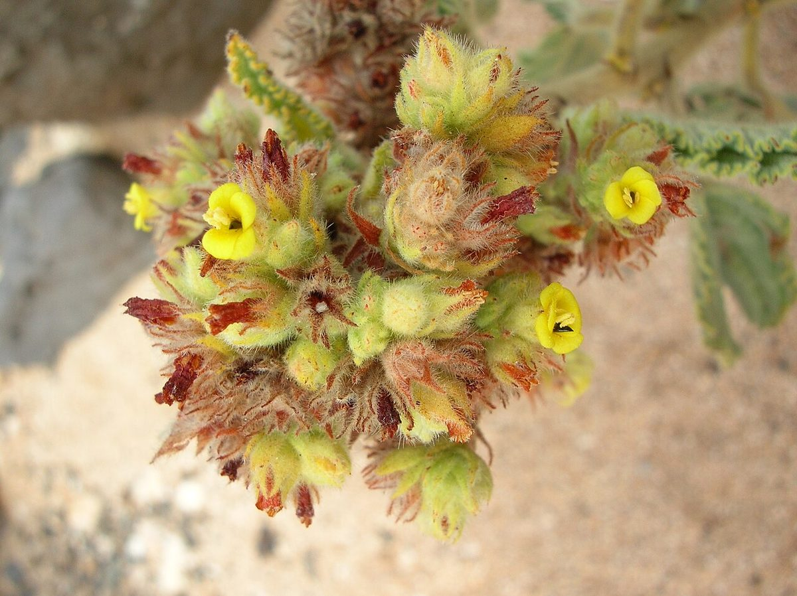
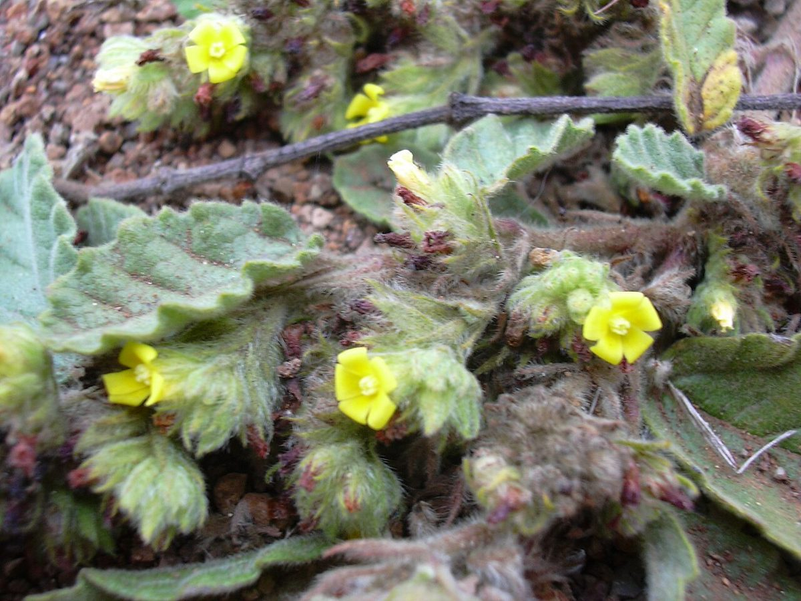

COMMON Beach strand Sea cliff Valley mouth
Waltheria indica
ʻuhaloa, hiʻaloa, hala ʻuhaloa · sleepy morning, ʻuhaloa



Quick facts
| Family | Malvaceae |
|---|---|
| Scientific name | Waltheria indica |
| Hawaiian name(s) | ʻuhaloa, hiʻaloa, hala ʻuhaloa |
| English name(s) | sleepy morning, ʻuhaloa |
| Status | Indigenous (native, non-endemic) |
| Conservation | — |
| Coastal zones | Beach strand Sea cliff Valley mouth |
| Occurrence | A ubiquitous small shrub of dry lowland Hawaiʻi, common on the roadless Nāpali coastal strip and inland at valley mouths from Nuʻalolo Kai to Kalalau and on the drier flats behind Māhāʻulepū. Pantropical, but reaches Hawaiian shores under its own dispersal — treated by Wagner as indigenous. |
How to identify
- Growth form
- Low erect to spreading soft-woody shrub 30–100 cm tall, often forming small mounds on open dry ground.
- Size
- 30–100 cm tall; canopy 30–80 cm across.
- Leaves
- Alternate, ovate to oblong, 2–6 cm long, with a rounded base and a finely serrate margin. Both surfaces densely velvety with tiny star-shaped (stellate) hairs — the leaf feels soft between finger and thumb, and reads as a distinctive grey-green from a distance.
- Flowers
- Very small (about 4 mm), 5 bright yellow petals, packed into dense axillary head-like cymes at the leaf axils. Individually inconspicuous; the tight yellow clusters against grey-green foliage are what you see.
- Fruit / seed
- Tiny 1-seeded capsule enclosed by persistent floral bracts.
- Bark / stem
- Soft-woody, tomentose with stellate hairs on younger growth.
- Where it sits on the coast
- Dry disturbed ground, valley mouth flats, and open lower slopes on sea cliffs. Prefers full sun; absent from wet forest interior.
Clinchers (features that lock the ID)
- Velvety-soft grey-green ovate serrate leaves — feel one between fingers to confirm the stellate-hairy texture.
- Dense clusters of tiny yellow 5-petalled flowers in the leaf axils, not solitary showy blooms.
- Small erect coastal shrub on dry disturbed ground.
Look-alikes
- Sida fallax (ʻilima) — ʻIlima has larger, showy solitary yellow-orange 5-petalled mallow flowers (1.5–2.5 cm across) rather than tight clusters of tiny yellow blooms; ʻilima leaves are glossier and less densely velvety.
- Abutilon spp. (introduced coastal mallows) — Abutilon has larger cup-shaped yellow-orange flowers and broader cordate leaves, typically softer velvety rather than dense- stellate on both faces.
Ecology
A dry-lowland pioneer species that colonizes disturbed ground rapidly and persists in dry coastal grassland. Its stellate-hairy indument reduces water loss; the small hard seeds are long-lived in soil. [16], [21], [22], [25], [26], [27]
Cultural significance
ʻUhaloa is one of the most important species in lāʻau lapaʻau (Hawaiian medicine), used by practitioners for a range of ailments drawing on both leaf and root. This guide names the tradition and credits the practitioners who continue it; preparation and dosing are not detailed here and belong to Hawaiian medical practice.